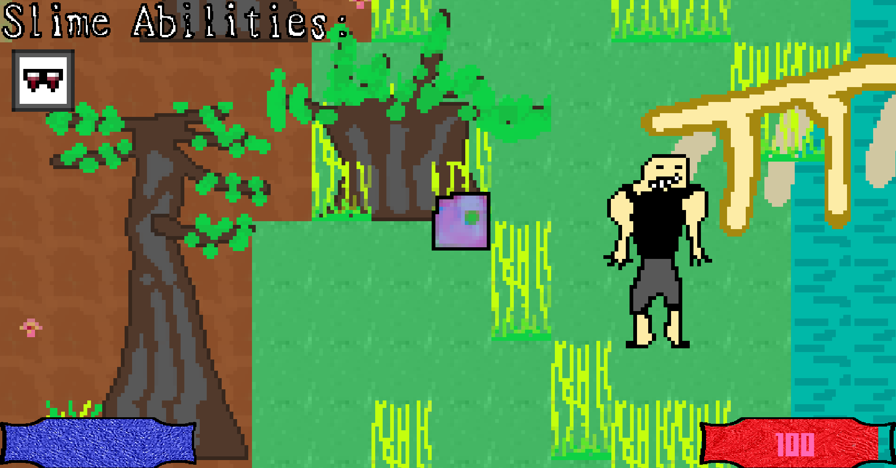

Every genre in one game.
About the game
|| Each level has a unique genre: 2d, 3d, textbased... we have it all.
|| Powerful message about self-improvement and improvement of society and the world.
|| This is a free pre-release version, your donation is appreciated and will help the development of the full game.
|| HUGE Underwater level and EXCEPTIONAL skins for only 2,50$ to give you a taste of the full version.

every genre in one game. the greatest call to self improvement.
As the middle age came to an end, humans were about to exterminate all monsters. You are a slime that was sent by his vampire stepfather to free all monsters against all odds.
As you learn new skills, your perception of the world changes, and the genre of the game completely changes.
You get to choose whether you want to do what your father conditioned you to do: Rely only on your vampire skills. Or you can learn the fighting skill which is taught to you by a guy who doesn´t agree with with your fathers philosophy at all...
I am a 17yr old guy who started making this game when I was 15. Since it took 2 years, a donation would be crucial if you liked this and want more of it! This is only the first release, the story will continue if adequate support is shown.
IF YOU DONATE, I CAN CREATE CUSTOM STUFF FOR YOU!
IF YOU DONATE ATL. 2,50$, you will get access to the Underwater DLC with new skins and a brand new level!
made in godot game engine